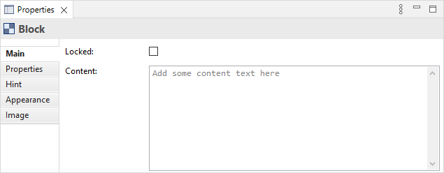
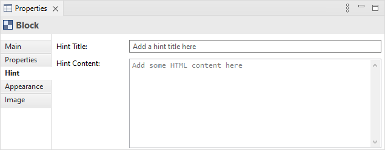
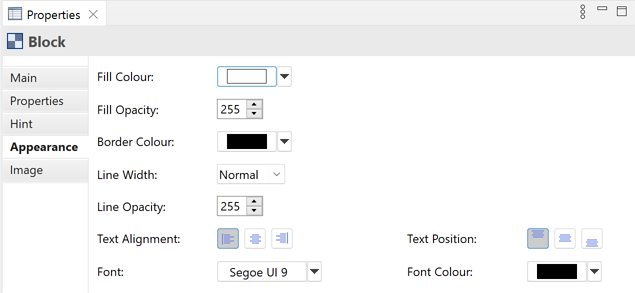
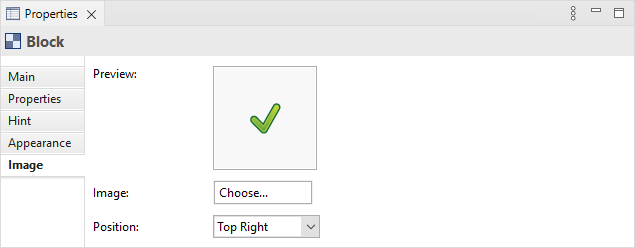

块对象是一个可以包含文本和图标的容器区域。您也可以提供自己的帮助提示。如果您想将其设置为只读,可以锁定该块。一个典型的场景是在画布上创建多个容器块,将它们排列成所需的框架,锁定它们,然后将画布保存为模板。
属性
在画布视图中选择一个块意味着您可以在属性窗口中编辑或查看以下属性。
主标签页
画布块的主属性
| 已锁定: | 选择这个可以确保块无法移动或编辑。 |
| 内容: | 一个输入块中一些文本内容的空间。文本将显示在块中。 |
属性标签页
有关创建和管理用户属性的更多信息,请参阅用户属性。
提示标签页
画布块的提示属性
| 提示标题: | 当选择该块时,在提示窗口中显示的提示的标题。 |
| 提示内容: | 当选择该块时,在提示窗口中显示的提示的文本内容的空间。允许使用 HTML 标签。 |
外观标签页
画布块的外观属性
| 填充颜色: | 设置所选对象的填充颜色。“默认”按钮将填充颜色设置为默认设置。 |
| 填充不透明度: | 设置图形的填充不透明度。范围从 0-255。 |
| 边框颜色: | 设置所选对象使用的边框的颜色。“无”按钮会从对象中删除边框。 |
| 线宽: | 设置边框线的宽度。选项有“正常”、“中等”和“粗”。 |
| 线不透明度: | 设置图形的线不透明度。范围从 0-255。 |
| 文本对齐: | 将所选对象中的文本对齐到左侧、中心或右侧。 |
| 文本位置: | 将所选对象中的文本对齐到顶部、中间或底部。 |
| 字体: | 设置所选对象中文本的字体。“默认”按钮将字体设置为在首选项中设置的默认字体。 |
| 字体颜色: | 设置所选对象中文本的字体颜色。“默认”按钮将字体颜色设置为默认设置。 |
图像标签页
画布块的图像属性
| 预览: | 显示图像在画布块中呈现的效果的预览图像。画布块图像的最大宽度和高度被调整为100像素。双击预览框将启动图像选择器对话框。您也可以从桌面拖放一个图像文件到预览框上。 |
| 图像: | 为对象选择一个图像或清除图像。有关更多详细信息,请参阅“向对象添加图像” |
| 位置: | 设置图像相对于对象的位置。 |